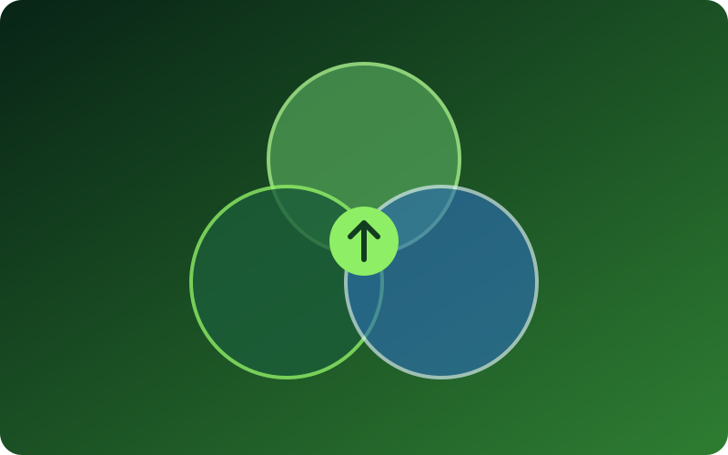

1. Pilar Ambiental
Focado na conservação dos ecossistemas, proteção da biodiversidade, redução da emissão de gases poluentes, economia de água e destinação correta de resíduos sólidos.
🌱 CONCEITO E PRÁTICA
Equilíbrio entre o que usamos hoje e o que deixamos para as próximas gerações — começando por escolhas cotidianas.
Segundo o Relatório Brundtland da Organização das Nações Unidas (ONU), sustentabilidade é a capacidade de suprir as necessidades da geração presente sem comprometer a capacidade das gerações futuras de atenderem às suas próprias necessidades.
Isso significa reconhecer que os recursos naturais — como água doce, solo fértil, florestas, minerais e ar limpo — são finitos e precisam ser utilizados com inteligência, justiça social e regeneração constante.

Focado na conservação dos ecossistemas, proteção da biodiversidade, redução da emissão de gases poluentes, economia de água e destinação correta de resíduos sólidos.
Garante qualidade de vida, educação ambiental, acessibilidade, saúde pública, trabalho digno para cooperativas de catadores e participação ativa da comunidade.
Incentiva a economia circular, o consumo consciente, a valorização de produtores locais e a criação de produtos duráveis que geram prosperidade sem destruir a natureza.
Antes mesmo de reciclar, a educação ambiental propõe cinco passos fundamentais para diminuir a geração de lixo:
Questionar se uma compra é realmente necessária e avaliar qual é o impacto ambiental daquele produto desde sua fabricação até o descarte.
Dizer não a embalagens excessivas, sacolas plásticas desnecessárias, canudos descartáveis e produtos de empresas que poluem o meio ambiente.
Diminuir o consumo diário de água, energia elétrica, papel e alimentos que acabam indo para o lixo por falta de planejamento.
Dar nova utilidade a potes de vidro, caixas, roupas, móveis e equipamentos, além de consertar aparelhos antes de substituí-los.
Separar os materiais secos (papel, vidro, metal e plástico) para que retornem à indústria como matéria-prima, economizando recursos virgens.
Transformar cascas de frutas, verduras e borra de café em adubo rico em nutrientes para vasos, jardins e hortas urbanas.

O projeto Raízes Sustentáveis contribui diretamente para quatro metas globais da ONU: